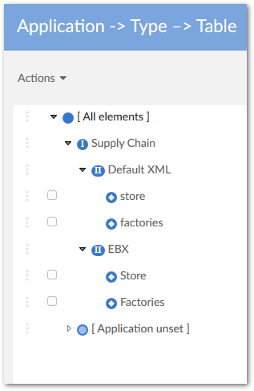
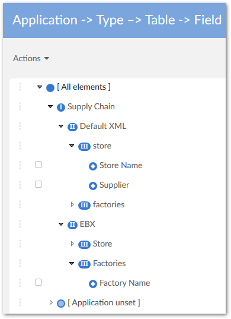
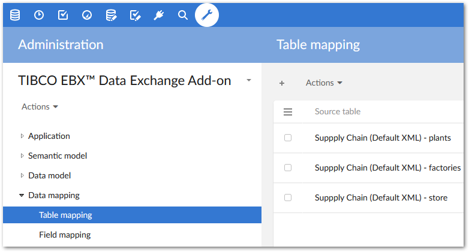
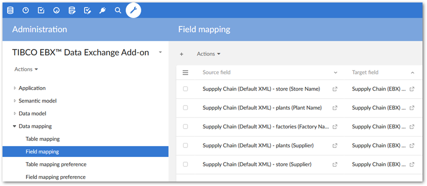

When the XML export execution process is based on the default XML configuration, the add-on generates the related data mapping configuration. It contains the correct XML paths used for each of the exported table's fields. Even though this default XML configuration cannot be modified, understanding its architecture can be of benefit to you. Indeed, if you need to configure a user-defined data mapping, the same architecture applies (see the rest of the user guide).
The following images give an overview of how this configuration is saved in the add-on's configuration. You can access the configuration from Administration > Integration > TIBCO EBX® Data Exchange Add-on.

The Supply Chain (name of the dataspace where the table is located) application is created with the two application types, Default XML and EBX. For the Default XML type, only the exported tables are declared (store and factories). For the EBX type, all tables and field groups located in the dataspace are declared.

The declaration of the XML nodes for the store, factories, and plants tables is done with the default XML naming convention (direct reuse of the naming from the table in EBX®).
The declaration of the fields for every table in EBX® is also performed.
The Table mapping is automatically provided. The source table has been declared as EBX for the export process. And the source table has been declared as Default XML for the import process.

Then the add-on automatically creates the declaration for the Field mapping, thus providing the link between the source and the target file.
